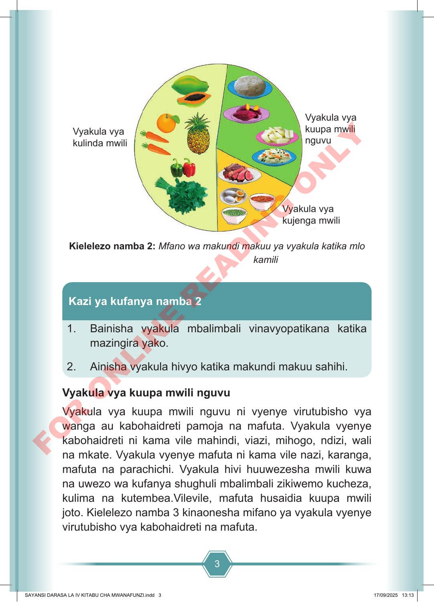

3 Vyakula vya kulinda mwili Vyakula vya kuupa mwili nguvu Vyakula vya kujenga mwili Kielelezo namba 2: Mfano wa makundi makuu ya vyakula katika mlo kamili 1. Bainisha vyakula mbalimbali vinavyopatikana katika mazingira yako. 2. Ainisha vyakula hivyo katika makundi makuu sahihi. Kazi ya kufanya namba 2 Vyakula vya kuupa mwili nguvu Vyakula vya kuupa mwili nguvu ni vyenye virutubisho vya wanga au kabohaidreti pamoja na mafuta. Vyakula vyenye kabohaidreti ni kama vile mahindi, viazi, mihogo, ndizi, wali na mkate. Vyakula vyenye mafuta ni kama vile nazi, karanga, mafuta na parachichi. Vyakula hivi huuwezesha mwili kuwa na uwezo wa kufanya shughuli mbalimbali zikiwemo kucheza, kulima na kutembea.Vilevile, mafuta husaidia kuupa mwili joto. Kielelezo namba 3 kinaonesha mifano ya vyakula vyenye virutubisho vya kabohaidreti na mafuta. SAYANSI DARASA LA IV KITABU CHA MWANAFUNZI.indd 3 SAYANSI DARASA LA IV KITABU CHA MWANAFUNZI.indd 3 17/09/2025 13:13 17/09/2025 13:13 F O R O N L I N E R E A D I N G O N L Y